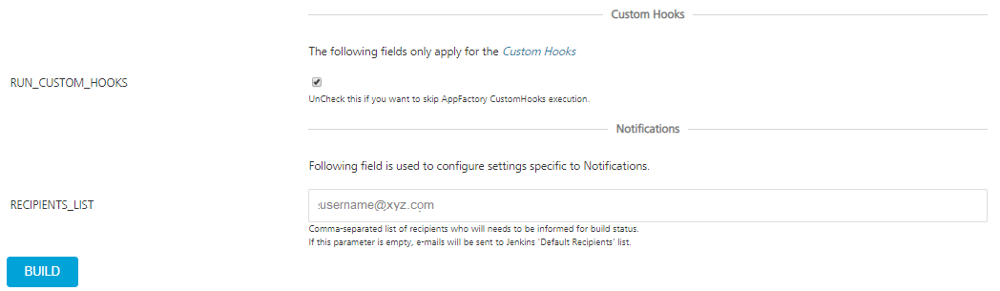
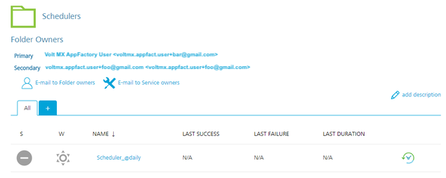
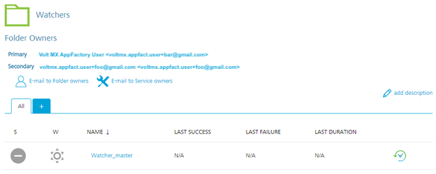
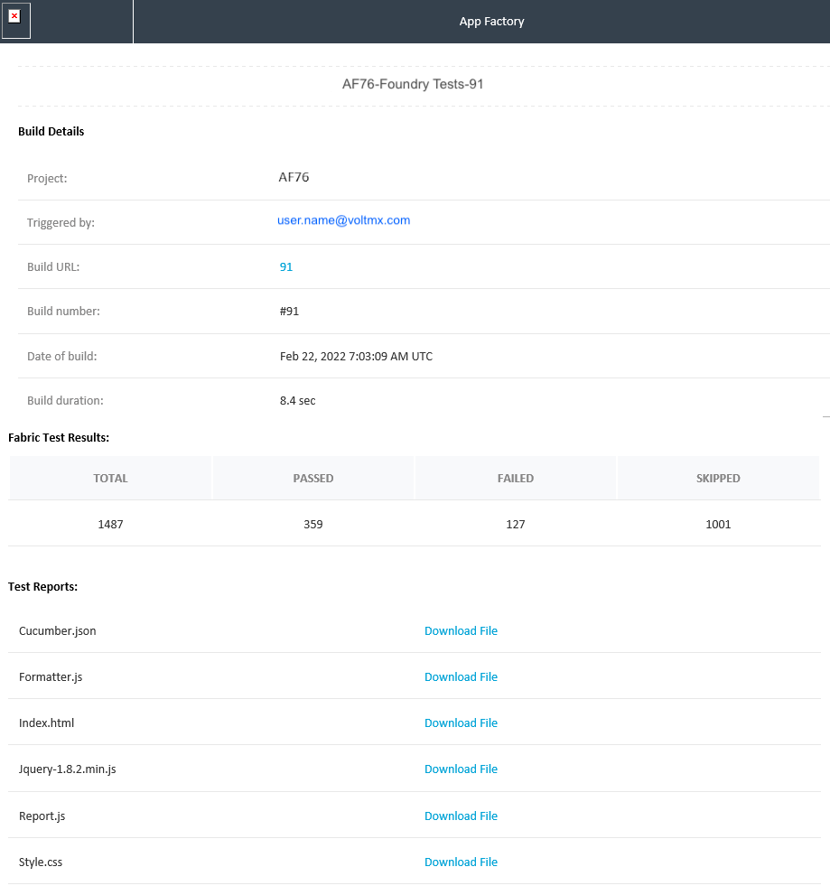

Testing a Foundry app with the Cucumber Framework
Cucumber is a behavior-driven development (BDD) framework that is used to validate test-case scenarios. From V9 ServicePack 5, you can use the Cucumber framework to run tests on Foundry projects.
Prerequisites
The test resources must be placed as a Maven project at the following path of your SCM:
<foundry_project_source>/<testResources>/Cucumber/
Make sure that the pom.xml file is in the testResources/Cucumber/ folder.
Alternatively, you can upload the test resources as a zip file in the TEST_ZIP_PACKAGE parameter.
Building and running a test
To build and run a test, follow these steps:
- From the Foundry folder of your project, navigate to the Tests sub-folder.
- For the runFoundryTests job, click the Build with Parameters icon on the right side of the row.
Alternatively, select the runFoundryTests job, and then from the left panel of the details page, select Build with Parameters. -
Configure the build parameters for the runTest job. For more information about the parameters, refer to the following sections.
Source ControlParameter Description SCM_BRANCH
Specifies the branch, release tag, or commit ID of the repository that contains the test files.
The tests must be placed at the following location:
<repository_root>/testResources/Cucumber/The <repository_root> specifies the root of the Foundry project source; it must be configured in the Project Settings.
Testing
Parameter Description TEST_FRAMEWORK
Specifies the framework that must be used for the test run. Contains the following options:
- Cucumber Test Framework
MVN_OPTIONS
Specifies the Maven options that can be included for the test run. You can also add command-line options for the
mvncommand.You can invoke Maven with a different set of goals, maven profiles, or additional arguments by using the -D option.
For example:clean package -DskipTests -Darg1=foo1 -Darg2=foo2TEST_ZIP_PACKAGE
Specifies a URL to the zip package that contains the test resources.
Make sure that the URL is public and accessible from App Factory.
If you have included the test resources in the SCM, you can skip this parameter.
TEST_REPORTS_DIRS
Specifies the custom reports that are generated during the test run. For example,
target/cucumber/cucumber.json.You can include multiple reports by separating them with a comma (
,).Custom Hooks

Parameter Description RUN_CUSTOM_HOOKS
Specifies whether Custom Hooks must be run in the after the tests are executed (the Post-Test stage). For more information, refer to Custom Hooks.
Running Tests from other jobs
You can trigger the test from the buildFoundryApp job available in the Project Name > Foundry > Builds folder. You can also create an auto-triggered test from the createFoundryTest job available in the Project Name > Foundry > Tests folder.
Auto-Triggering Tests
App Factory supports two types of auto-triggered test jobs: scm-triggered (Watchers) and cron-triggered (Schedulers). Every project contains a folder called Tests in the Foundry sub-folder, which contains a job for creation of auto-triggered jobs (createFoundryTest) and two sub-folders where the created jobs are stored.
To setup an auto-triggered test job, follow these steps:
- From the project folder, navigate to the Tests sub-folder.
- Select the createFoundryTest job.
-
Configure the CRON_SCHEDULE parameter based on your requirement.
-
If you want to create a Scheduler, type a Cron expression that corresponds to the time at which the build job must be triggered.
For information about cron expressions, refer to Cron. * If you want to create a Watcher, leave the CRON_SCHEDULE parameter blank. 4. Configure the remaining parameters, which are the same as the runFoundryTest job. 5. After you configure all the parameters, click BUILD.
-
-
Every Scheduler that is created contains the cron string in job name to simplify the job search.
 - Every Watcher that is created contains the branch name in job name to simplify the job search.

Test Results
After a test run is complete, an email that contains the test results is sent to the addresses that are configured in the project settings.
The email displays information about the test run, such as the number of passed and failed test cases, build number, build URL, and build duration. The email also contains links to the various test reports.
Sample email for Foundry test results
